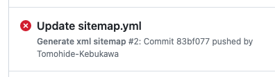

GitHubで公開したリポジトリを他の人に利用してもらうためには、やはりGoogleの検索結果に表示されないと不便です。 URLを説明するよりも、確実に検索でヒットするキーワードを教えるほうが、ずっと楽だし、相手も簡単に覚えられるかです。 しかし、ただ単にリポジトリを公開するだけでは、いつまでたっても検索結果にはでてきません。
Googleの検索結果に表示されるようにするためには、Googleにリポジトリをクロールして貰う必要があります。 そのためには、次のことをしなければなりません。
sitemapは、Googleで検索される公開サイトには必須のものです。 ですが、手作業で作成していると、つい更新がおろそかになり、Google Botが正しくクロールしてくれなくなります。
GitHubには、GitHub Actionsという機能があるので、これを使えばページ更新（コミット）したときに自動でサイトマップを作れるに違いないと思いました。
しかし、Github初心者にはゼロから作るには、ハードルが高すぎです。
動作するサンプルコードがあれば、サイトマップの作成を例にして、GitHubアクションを学べるに違いないのです。 一石二鳥というわけです。
このような機能は、きっと優秀な先人たちが既に用意しているはずです。 実際ネットを漁ると、色々と情報が出てきますが、そのまま使えるコードがなかなか見つかりません。
色々なサイトからコードをコピーしては試してみましたが、なかなか動作しそうにありません。 そんな中、Marketplaceにきちんと説明された、完璧な見本を発見しました。 それが⇓これです！
説明をみると、何かをインストールすることなく動作しそうです。
ということで、上記のページで公開されているExample 1: Minimal Exampleをそのまま配置してみました。
見つけたサンプルコードは、どこに書けば良いのかまではgenerate-sitemapの説明では、はっきりと書かれていません。 こういったところが初心者にはきついところだったりしますが、ヒントはあります。
簡単に言えば・・・
サイトマップを作成するワークフローのファイルを.github/workflowsディレクトリ内に置いて、あとはコミットをすればサイトマップができるはずです。 ということで、早速実験しました。
実際コミットしてためしてみました。 しかし、sitemap.xmlは生成されませんでした。 これまで、他のコードでもうまく行かなかったので、驚きもしませんでしたが少しがっかりです。
念のためActionsタグをクリックして、Actionsの履歴を確認しました。
すると、エラーが出ていました。 
これまでのコードとは感触の違うエラーです。 内容を確認してみると…
if [[ `git status --porcelain sitemap.xml` ]]; then
git config --global user.name 'github-actions'
git config --global user.email '41898282+github-actions[bot]@users.noreply.github.com'
git add sitemap.xml
git commit -m "Automated sitemap update" sitemap.xml
git push
fi
shell: /usr/bin/bash -e {0}
[main 43381b1] Automated sitemap update
1 file changed, 7 insertions(+)
create mode 100644 sitemap.xml
remote: Permission to Tomohide-Kebukawa/Tomohide-Kebukawa.github.io.git denied to github-actions[bot].
fatal: unable to access 'https://github.com/Tomohide-Kebukawa/Tomohide-Kebukawa.github.io/': The requested URL returned error: 403
Error: Process completed with exit code 128.
コード自体は正しく動作してXMLを生成できているようですが、git pushで失敗しているのが原因のようです。 原因は、どうやらアクセス権にあるようです。 アクションで書き換える権利が不足している可能性があります。
Settingsタグを押し、さらに左端にあるActions / General のリンクを押して設定を確認すると、最後の方にあるWorkflow permissionsカテゴリにそれっぽい設定がありました。 デフォルトでは「Read repository contents and packages permissions」オプションが有効にされていますが説明を読むと、このオプションではワークフローは読み取り権限しかありません。 これだと、git pushで書き換えに失敗すると思います。
ということで「Read and write permissions」オプションを有効にして、ワークフローに書き換えを許可することにします。
アクセス権を変更したので、早速コンテンツの一部を書き換えて、コミットしてみました。 今度はエラーは解消され、結果、sitemap.xmlは自動で生成されるようになりました。 これでサイトマップの更新については手放しで、コンテンツの作成に没頭することができるようになりました。
めでたし、めでたし✌